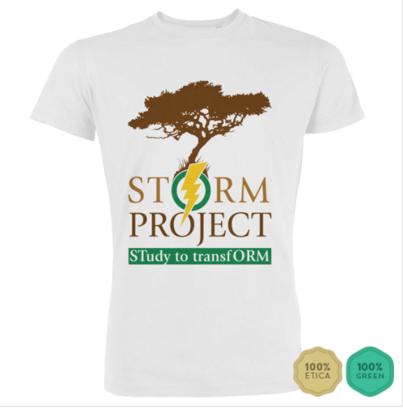

Warum wurde STORM Project gegründet?
Wir waren von unserer ersten Reise nach Kenia mit einem Projekt zurückgekehrt, von dem wir überzeugt waren und das wir gerne fortgesetzt hätten. mit der Unterstützung eines bestehenden Vereins und mit der nötigen Erfahrung. Leider zwangen uns die bürokratischen Schwierigkeiten bald zu einer Überprüfung Unserer Ideen und schließlich stellte sich heraus, dass es einfacher war, sich an der Gründung eines neuen Vereins zu beteiligen, als zu versuchen, sich einem bereits aktiven anzuschließen. Genau aus diesem Grund besteht eines der Grundprinzipien von STORM darin, allen Menschen, die Vorschläge machen oder Projekte in jeden Bereich umsetzen möchten, das Angebot zu machen sich uns anzuschliesen, solange sie die Regeln unseres Statuts einhalten. Begleiten Sie uns mit einem neuen Projekt, mit einer Idee für unsere Projekte oder einfach mit einem großer Begeisterung !!!

Twende!
Fliege mit uns nach Kenya!
Wenn Sie an einer Auslandserfahrung interessiert sind, die Ihren kulturellen Hintergrund erweitern kann, kontaktieren Sie uns!
Wir werden so schnell wie möglich zurückkehren, um unsere Unterstützung vor Ort zu geben!
Schreiben Sie uns, damit wir uns kennenlernen und die Erfahrung in allen Details organisieren können!
Wir warten auf dich!
Sensibilisieren
Jeder von uns hat unterschiedliche Fähigkeiten. Wenn wir den besten Weg finden, sie zusammen zu verwenden, sind wir stark. Sie können uns bei Spendenaktionen helfen oder Ihren Freunden von uns und den Projekten erzählen, die wir durchführen möchten. oder helfen Sie bei unsere Seiten auf den sozialen Netzwerken mit, und werden Sie Mitglied unseres Vereins! Es gibt viele Möglichkeiten und Dinge, die zu tun sind, und deshalb können wir sie nur durch Zusammenarbeit verwirklichen.


Spenden
Sie können mit einer Spende in beliebiger Höhe auf dieser Website einen Beitrag leisten oder ein STORM-T-Shirt in der Farbe kaufen, die Sie bevorzugen.
Unterstützen Sie uns mit einer kleinen monatlichen Spende oder vielen anderen Alternativen, die Sie auf der entsprechenden Seite finden.
Jeder Beitrag, auch ein kleiner, ist viel wert.